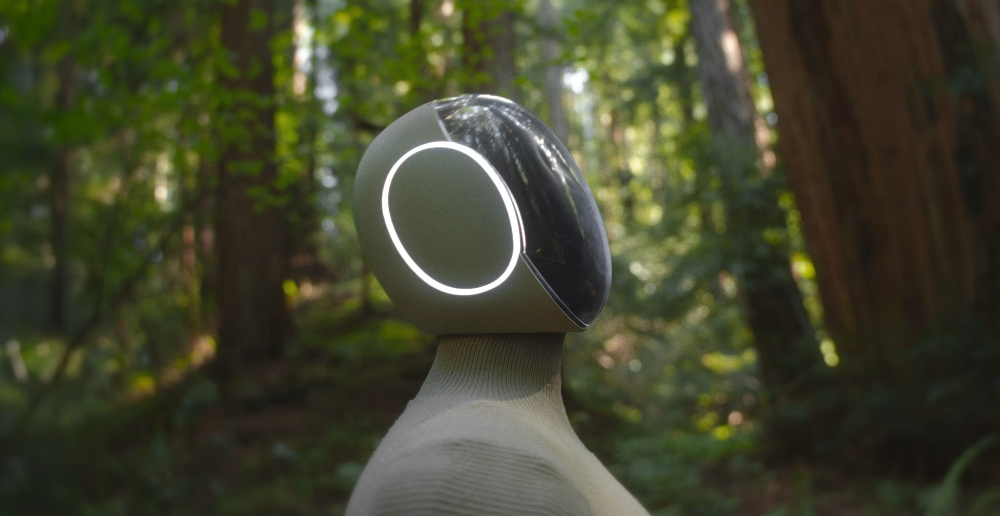
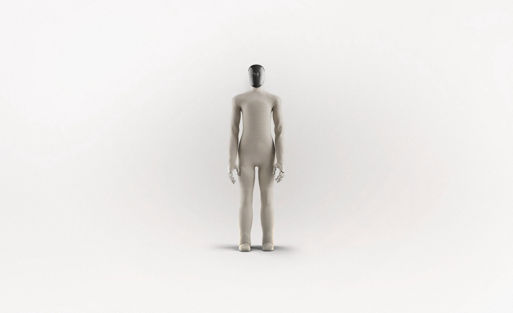

1X veut révolutionner la robotique domestique
par O. Abdelwahd · Publié le 29 septembre 2025

NEO Beta, le nouveau robot humanoïde bio-inspiré de 1X destiné à un usage domestique.
Cette semaine, 1X a dévoilé son nouveau projet : NEO, un robot bipède humanoïde conçu pour une utilisation domestique. Le projet, encore en phase beta, s’accompagne d’un objectif ambitieux : lever 1 milliard de dollars afin de mener son développement à terme.
1X est un pionnier de la robotique et de l’intelligence artificielle. L’entreprise américano-norvégienne, fondée en 2014 par Bernt Øyvind Børnich, a déjà fait ses preuves avec EVE, un robot humanoïde utilisé dans l’industrie logistique mais aussi dans le domaine de la santé. EVE a servi de plateforme de test grandeur nature pour des technologies clés comme l’actionnement, la perception et la manipulation. Aujourd’hui, l’entreprise élargit ses ambitions en se tournant vers la robotique domestique avec le projet NEO Beta.
Un design humanoïde bio-inspiré

Au-delà de ses capacités impressionnantes, l’originalité de ce prototype réside dans son design humanoïde bio-inspiré. Que ce soit dans la morphologie, les mouvements ou les fonctionnalités, les ingénieurs se sont inspirés du vivant afin de rendre le robot plus sûr, plus agile et mieux adapté à interagir avec les humains. Ce design particulier le distingue des humanoïdes industriels, souvent perçus comme rigides, métallisés et parfois menaçants dans un contexte domestique.
La stratégie de 1X est claire : concevoir des robots reposant sur l’adaptabilité, la souplesse mécanique et surtout la sécurité. « Notre priorité est la sécurité. La sécurité est la pierre angulaire qui nous permet d’introduire avec confiance NEO Beta dans les foyers, où il recueillera des retours essentiels et démontrera ses capacités dans des environnements réels », précise Bernt Børnich, PDG de 1X.
1X veut prouver
Cette année, l’objectif est de déployer une flotte encore restreinte de NEO Beta dans divers environnements, aux côtés d’humains, afin de démontrer sa capacité à accomplir une large gamme de tâches. Cette étape est cruciale alors que l’entreprise cherche à lever 1 milliard de dollars de nouveaux financements.
« Cette année, nous déployons un nombre limité d’unités NEO dans des foyers sélectionnés à des fins de recherche et développement. Ce faisant, nous franchissons une nouvelle étape vers la réalisation de notre mission », conclut Bernt Børnich.